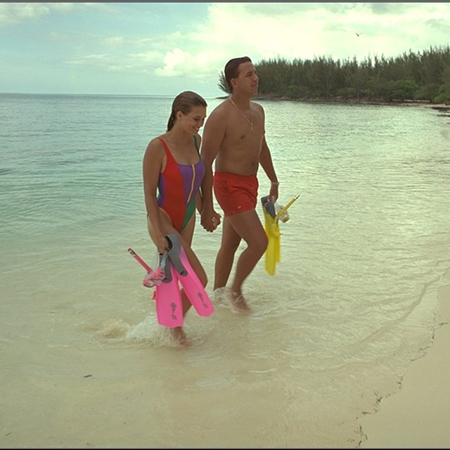
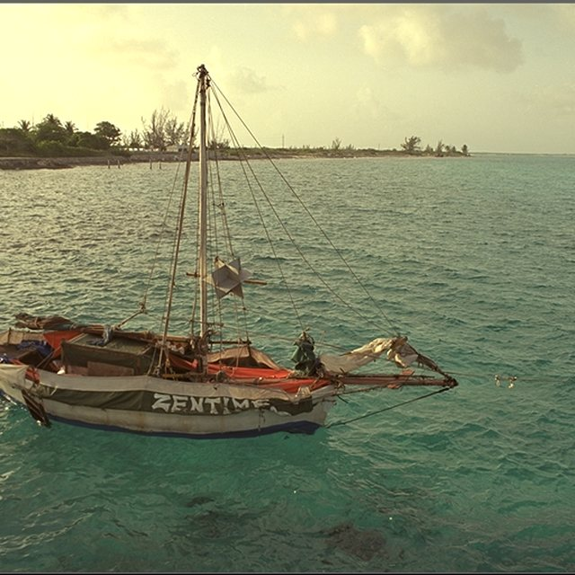

Find any photo by who, where and what.
Mira recognises faces and describes every photo, right on your own computer. Then you just search in plain words.
-

-

Deep search #1 fits best: Anna and Ben walk out of clear water onto a sandy beach on a bright summer day, with nothing work-related in view.
What Mira does for you
Search the way you remember
Type what you remember, like “Anna at the beach, summer 2021”, in any language. Mira finds the matching photos.
Every photo of a person
Mira recognises faces and groups them by person. Name someone once and see all their photos.
See where you were
Photos with a location are grouped into places and shown on a map.
Watch them grow up
See one face through the years as a timelapse, or compare two people at the same age.
Fix wrong dates
Scans and cameras with a reset clock often carry the wrong year. Mira spots them and suggests the right one.
Albums that fill themselves
Save any filter as a collection and new photos join on their own. Export to digiKam, Immich or Lightroom.
Pick how you want to run it
Every setup uses Ollama for properties and search. Faces are found fastest on an NVIDIA GPU, and on any CPU too.
Windows app
EasiestA setup program with its own window. No administrator rights needed.
-
1
Download the setup from GitHub Releases: gpu for NVIDIA cards (driver R580 or newer), cpu for every other PC.
- 2
-
3
Start Mira from the Start menu. Your library lives in
%LOCALAPPDATA%\vision-taggerand survives updates.
Docker
NAS or serverRemote mode: upload photos in the browser. Ollama comes along in the same compose file.
-
1
Copy the example file, choose a password in .env and start it:
cp .env.example .env docker compose up -d
-
2
Pull the models inside the container:
docker compose exec ollama \ ollama pull qwen2.5vl:7b docker compose exec ollama \ ollama pull nomic-embed-text
-
3
Open
http://<server>:8765, log in and upload on Import. Add HTTPS through a reverse proxy to install it as an app.
From source
Linux, macOS, WindowsWith uv, which installs Python 3.12 for you.
-
1
Install uv and Ollama with both models. On Windows, add the C++ Build Tools (Desktop development with C++).
-
2
Clone, install and create the database:
git clone https://github.com/w1nte/vision-tagger.git cd vision-tagger uv sync --extra gpu # or --extra cpu uv run vision-tagger init -
3
Start it and open the browser:
uv run vision-tagger serve --open
Your first run
-
1
Add your foldersOpen Import, choose Add a folder… and click Scan now. Analysis starts right after.
-
2
Let it workPipeline shows progress and time left. Close the app whenever you like; it continues on the next start.
-
3
Name and searchName the face groups under Faces, then press / and search in plain words.